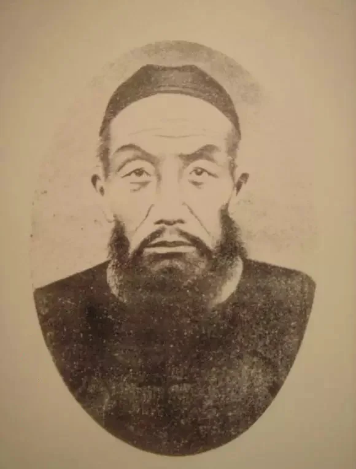

HIST 270 · Chapter 18 · Self-Strengthening Workshop · Teaching Page
Zeng Guofan
Scholar-general, conqueror of the Taiping, founder of the Jiangnan Arsenal
曾國藩 1811–1872

Your job today: you are the class expert on Zeng Guofan. Nobody else in the room has read this page.
- Read (about 10 minutes): his story, the project or event he is tied to, and two short documents. Underline the one sentence you would most like to read aloud.
- Prepare (about 5 minutes): fill in boxes 1–5 at the bottom of this page. Short notes are fine.
- Teach (about 4 minutes): tell the class who he was and what happened, read your sentence aloud, explain why it matters, and ask your question.
- Exit ticket: answer questions 6–8, then export your work and upload it to Canvas.
Who He Was
Zeng Guofan was the most respected official of his age, and he was a scholar first. He passed the highest examination, the jinshi, in 1838 and spent years at the Hanlin Academy in Beijing, writing and studying the classics. In 1842, as a young Hanlin scholar, he went to the Grand Secretary Woren for advice, began keeping a diary of his own faults as Woren did, and sent it to Woren for his comments. He became a general only because he had to.
At the end of 1852, when the Taiping armies swept through central China, the emperor ordered Zeng to raise troops in his home province of Hunan. He built an army of farmers led by scholars, and at first he lost, badly. After one defeat in 1854 he jumped into the river to drown himself, and a member of his staff pulled him out. He kept going. In 1861 his army took the city of Anqing, and in 1864 it took Nanjing and the Taiping kingdom died. The throne made him a marquis. His former secretary, Li Hongzhang, became the other great builder of the age.
Zeng did not hate foreigners. In 1870 he settled a riot in Tianjin in which a mob had killed French nuns and priests: he executed rioters and paid France, and many scholars called him a traitor for it. He died in March 1872.
His Project: From a Workshop at Anqing to the Jiangnan Arsenal
- 1861At Anqing, right after taking the city, Zeng set up a workshop to copy foreign guns and shells.
- By 1863His men had built a small wooden steamboat.
- 1863He invited Yung Wing, the first Chinese graduate of an American college (Yale), to his headquarters and sent him to the United States to buy machines. The first order was filled by the Putnam Machine Company of Fitchburg, Massachusetts.
- 1865Zeng and Li Hongzhang founded the Jiangnan Arsenal at Shanghai with Yung Wing's machines. It launched its first steamship in 1868.
- After 1865The arsenal's translation bureau, where the Englishman John Fryer worked with the Chinese scholars Xu Shou and Hua Hengfang, translated more than a hundred Western books on science and engineering.
- 1871Zeng and Li proposed sending Chinese boys to study in the United States. Zeng died in March 1872; the first thirty boys sailed from Shanghai on August 11, 1872.

Sources: Hummel, “Tsêng Kuo-fan”; Yung Wing, My Life in China and America (1909), chaps. 13–14; Ebrey, p. 323 (table); CEM Connections, “Origins” (sailing date).
The Reading
You have two documents. Document A is from Zeng's own diary, written in 1862 while the Taiping war was still raging; it is the clearest statement of what he thought “self-strengthening” meant. Document B is how Yung Wing remembered meeting Zeng a year later, in 1863. He wrote it in English in 1909, when he was an old man.
Document A · Zeng Guofan's diary, 1862
I talked at length with the gentlemen of my staff, and one of them raised the subject of the foreigners. I said: if we want to control the foreigners, we should not fix our eyes on how much customs duty they pay, or on whether their manners are respectful or arrogant. As for the people of the interior who fawn on the foreigners everywhere, who admire them and look down on China, who lean on them to bully other Chinese: hateful as they are, a far-sighted man still should not fix his eyes there.
Where should men like us fix our eyes? First, when the foreigners entered the capital in the eighth month of 1860 [October 1860], they did not destroy our ancestral temples or the altars of the state. Second, right now at Shanghai, Ningbo and other places they are helping us attack the rebels. In both they have done us a kindness, and China should not forget the great kindness and nurse a grudge over small injuries.
If we seek the way of self-strengthening, the urgent tasks are to reform how we govern and to find men of real talent. Learning to make explosive shells and to build steamships is where the hands-on work begins.
Zeng Guofan, diary, 7th day of the 5th month, first year of Tongzhi (June 3, 1862), written at Anqing; Zeng Wenzheng gong shoushu riji (Zeng's handwritten diary, printed 1909), vol. 13. Chinese text as quoted in Zhu Dong'an, "Zeng Guofan de yangwu sixiang yu Zhongguo chuantong wenhua," Chuanshan xuekan, 1996, no. 2, and in the Chinese edition of Teng and Fairbank, China's Response to the West, ch. 6. Translated from the Chinese for this class.
Document B · Yung Wing remembers meeting Zeng, 1863
For a few minutes he sat in silence, smiling all the while as though he were much pleased to see me, but at the same time his keen eyes scanned me over from head to foot to see if he could discover anything strange in my outward appearance. . . .
There were living in his military headquarters at least two hundred officials, gathered there from all parts of the Empire, for various objects and purposes. Besides his secretaries, who numbered no less than a hundred, there were expectant officials, learned scholars, lawyers, mathematicians, astronomers and machinists; in short, the picked and noted men of China were all drawn there by the magnetic force of his character and great name. . . .
Several days after the dinner and conversation, the Viceroy did send for me. In this interview he asked me what in my opinion was the best thing to do for China at that time. . . . I repeated in substance what I had said to my friends previously in regard to establishing a mother machine shop, capable of reproducing other machine shops of like character. . . .
"Well," said he, "this is a subject quite beyond my knowledge. It would be well for you to discuss the matter with Wha and Chu, who are more familiar with it than I am and we will then decide what is best to be done." . . .
The Kow Chang Meu machine shop was afterwards known as the Kiang Nan Arsenal. . . . It may properly be regarded as a lasting monument to commemorate Tsang Kwoh Fan's broadmindedness as well as far-sightedness in establishing Western machinery in China.
Yung Wing, My Life in China and America (New York: Henry Holt, 1909), chap. 13, "My Interviews with Tsang Kwoh Fan." Public domain (Project Gutenberg ebook 54635). Yung Wing spells Zeng's name in old Cantonese style: Tsang Kwoh Fan. "Kiang Nan Arsenal" is the Jiangnan Arsenal.
Words to Know
Questions to Think About as You Read
- In his diary, what does Zeng say is more important than guns and steamships?
- Zeng writes that the foreigners did China a “kindness” in 1860. Why might that have angered scholars like Woren, who never forgave 1860?
- Yung Wing says Zeng admitted that machinery was “quite beyond my knowledge.” Is that a weakness, or a strength, in a leader?
Your Work Today
Prepare to Teach Zeng Guofan
Your draft saves in this browser as you type, on this device only. When you finish, click Export to .txt and upload the file to Canvas. If the download does not work, click Copy all and paste into the Canvas text box.
Exit Ticket
Answer these after everyone has taught. Review Questions 7 and 8 come from the Chapter 18 Reading Guide (Ebrey, pp. 321–322).